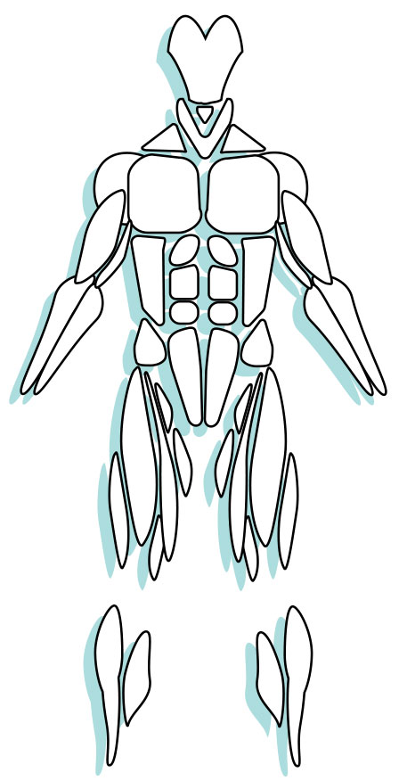

Overview
Muscles are responsible for permitting movement for the human body. They are special types of tissues that produce force through contraction and relaxation. In addition to their primary function, muscles provide protection, aid in digestion, balance and posture, as well as heat generation. On average, muscles make up about half a human's body weight.
There are three distinct types of muscle that perform unique tasks: skeletal, cardiac and smooth muscles.
Muscles work with the bones of the skeletal system to form levers. This muscle-bone relationship involves leverage in order to create movement. There are three classes of levers.
Identifying a skeletal muscle's origin and insertion can help in identifying a specific muscle. Each has one end remaining in a fixed position while the other moves during contraction.